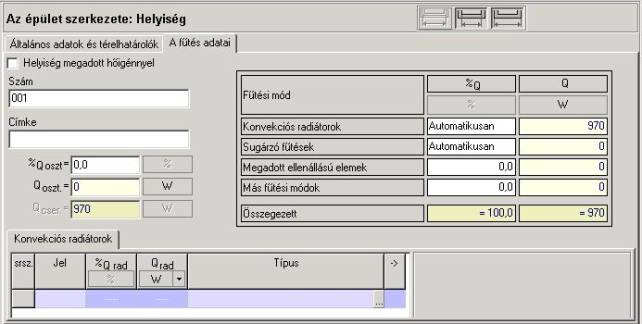
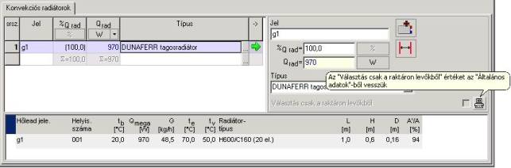

2.9. A radiátorok megválasztása és a hõveszteség felosztása
A program megengedi a helyiség hõigényének tetszõleges felosztását a különbözõ fûtési módok között, egy helyiségben több különbözõ típusú radiátor kiválasztásának lehetõségével. Lehet a helyiségben padlófûtést meghatározni, vagy más hõleadót. A program nem hajtja végre a padlófûtés méretezését, de lehetõvé teszi a padlófûtés fûtõköreinek az Instal-therm vagy más programmal kiszámolt, teljesítményének beírását.
A hõnek a különbözõ fûtési módok és/vagy más helyiségek közötti felosztása a tervnek az "Épület szerkezete" pozíciójában érhetõ el, az „Épületszerkezet:Helyiség” szerkesztõablakban a „Fûtés adatai” könyvjelzõn. A helyiségben a bennük beállított térelhatárolókra a hõveszteség kiszámítása vagy megadása után a program meg tudja választani a radiátorokat a helyiségben.
Ez egy elõzetes kiválasztás, amely nem veszi figyelembe a víz tényleges kihûlését a csövekben. A kihûlést ez a program becsléssel veszi figyelembe, egy, az épületszintek számától függõ szorzót használva. Ezért az Instal-heat&energy programmal kiválasztott radiátorok különbözhetnek az Instal-therm programmal kiválasztottaktól – az elõbbiek általában kisebbek lesznek. Ezért ajánlatos a fûtési rendszer pontos méretezését az Instal-therm programban végrehajtani.

A „Qcser/Fcser” mezõben van megjelenítve a helyiség hõvesztesége, amelyet a hõleadóknak a helyiségben fedezniük kell.
! A fûtés által fedezendõ „Qcser/Fcser” hõveszteség a helyiség teljes redukált hõvesztesége (a hõveszteség kívánt értéke) megnövelve vagy csökkentve a szomszédos helyiségbe/bõl irányuló hõveszteséggel a felosztásának deklarálása esetén.
A helyiséget fûthetik konvekciós fûtõtestek, sugárzó fûtések, megadott ellenállású elemek, vagy egyéb fûtési módok. A felhasználó attól függõen tölti ki az ablak jobb oldalán található táblázatot, hogy a fûtést hogyan kell megvalósítani a helyiségben. A program alapértelmezésben „Automatikusan” elvégzi a hõ felosztását a konvekciós fûtõtestek és a sugárzó fûtés között, azaz a hõigényt teljes egészében a konvekciós fûtõtestek fogják fedezni. Ha azonban a terv az Instal-therm programból lesz beolvasva, és ott a radiátorok és a padlófûtés közötti hõelosztás szintén „Automatikus” lesz, akkor a tervnek az Instal-heat&energy programba történõ beolvasása után a padlófûtésnek lesz elsõbbsége. Ez azt jelenti, hogy a helyiség „Qcser”/”Fcser” –jét a padlófûtés fogja fedezni az Instal-therm programban történõ méretezés során.
Ha a felhasználó arra számít, hogy a helyiségben más fûtési mód is lesz, akkor megadhatja a táblázatban ezek teljesítményét, mint [W]-ban levõ értéket a „Q”/„F” oszlopban, vagy a helyiség %-os hõigényeként a „%Q”/ „%F” oszlopban. Végeredményben változik a radiátorok megkívánt teljesítménye a helyiségben, mivel a hõveszteségeket más módú fûtés fogja fedezni. Az egyes hõleadók összegezett hõteljesítménye meg kell feleljen a „Qcser/„Fcser”-nak, a helyiség hõszükségletének.
Ha a hõszükséglet 100%-ának fedezését a szomszéd helyiségekbõl felosztott hõbõl deklaráljuk, akkor a radiátorok szükséges teljesítménye 0 [W] lesz, mivel a fûtéssel fedezendõ hõveszteség azzal az értékkel lesz csökkentve, ami a más helyiségekbõl felosztott hõbõl következik.
Hangsúlyozni kell, hogy a felhasználó megadhatja a hõfelosztást mindössze arra a helyiségre is, amely átvevõ. Ez azt jelenti, hogy a hõfelosztás a „Honnan” hõfelvétel irányában van megadva, nem pedig a „Hova” irányban.
Arra a helyiségre, amely hõadó, a „Qcser”/„F cser” automatikusan meg van emelve a deklarált, a hõátvevõnek átadott hõáram értékével, a hõfelosztás mezõje pedig a táblázatban nem hozzáférhetõ.
! A hõfelosztást lehet deklarálni abban a helyiségben, amely hõátvevõ a szomszédos helyiségekbõl. Az ilyen helyiségre a „Qcser/Fcser” a más helyiségbõl átvett hõ értékével csökkentve lesz.
A hõsugázás értékének a „Qfeloszt”/„Ffeloszt” – „A más helyiségekbõl átosztott hõteljesítmény” mezõbe történõ beírása után megjelenik a „Hõfelosztás” könyvjelzõ. A felhasználó itt megadhatja a legördülõ listából a hõfelosztás módját, a táblázatból pedig kiválaszthatja a szomszédos (hõátadó) helyiségeket, valamint a szomszédos helyiségekbõl átosztott hõteljesítmény részben vagy egészében fedezõ hõsugár értékét. A más helyiségekbõl átosztott hõteljesítményt meg lehet adni [W]-ban, vagy a Qcser/Fcser redukált hõveszteség értékében való részesedés [%] ában. A „Hõfelosztás módja” ablakban a felhasználó a következõ lehetõségek közül választhat:
- Kézi – lehetõvé teszi, hogy önállóan határozzuk meg úgy a helyiségeket, mint azok részesedésének arányát a hõveszteség fedezésében.
- Félautomatikus – lehetõvé teszi azoknak a helyiségeknek az önálló megadását, amelyek a kiválasztott helyiség hõveszteségét fedezi, azonban ezen helyiségek százalékos részesedését a hõfelosztásban a helyiség teljes redukált hõveszteségéhez viszonyított arányában lesz meghatározva.
- Automatikus – a program maga dönt arról, hogy mely helyiségek és milyen
mértékben fedezik az aktuális helyiség veszteségét. Ki van választva az összes
fûtött helyiség az aktuális csoportból, amely az adott helyiséggel szomszédos,
a megadott szomszédos térelhatárolókban belsõ ajtókkal. A veszteség ezeknek a
helyiségeknek a teljes redukált hõveszteségéhez viszonyított arányban van
felosztva. A felosztásnak ez a módja azonban az összes térelhatároló megadását
kívánja meg, nem csak a helyiségek közötti, hûtõ térelhatárolókat, hanem a nem
hûtõket is, hogy a program automatikusan ki tudja választani a helyiséget a
felosztáshoz.
A hõfelosztás helyesen lesz megadva, ha a „Hõfelosztás” könyvjelzõ táblázatában
a más helyiségekbõl felosztott hõteljesítmény összege egyenlõ lesz „Qfeloszt”/„Ffeloszt” mezõben megadottal.
A
„Konvekciós radiátorok” könyvjelzõn a felhasználó kitölti a
radiátormegválasztás táblázatát, megadva sorban a jelét, a wattokban vagy a
helyiség „Qcser” / „Fcser”
értékének százalékában megadott teljesítményét, valamint a radiátor típusát a
beolvasott katalógusok legördülõ listájából. A táblázat mellett megjelenõ
ablakban vannak a radiátornak a táblázatba beírt értékei. Itt a felhasználónak
további lehetõsége van a radiátor adatainak kiegészítésére a radiátornak a
helyiségbeni elhelyezésére, a letakartságára, és a rendszerbe való bekötésének
módjára vonatkozó adatokkal a nyomógomb
használatával. A  nyomógombot
használva, deklarálni lehet a radiátornak a tervben megkívánt magasságát,
szélességét és mélységét. További információkat a 4.3.4 fejezet tartalmat.
nyomógombot
használva, deklarálni lehet a radiátornak a tervben megkívánt magasságát,
szélességét és mélységét. További információkat a 4.3.4 fejezet tartalmat.
A különbözõ
radiátorok a katalógusban különbözõ, azaz raktárról vagy megrendelésre kapható
hozzáférhetõségi státusszal rendelkezhetnek. Ezért a megválasztási ablakban
minden kiválasztott radiátortípushoz meg kell adni a hozzáférhetõséget.
Átvehetõ az adat az „Általános adatokból”, vagy meg lehet adni a
hozzáférhetõséget egyedileg az adott radiátortípusra. Ezek között a funkciók
között az „Általános adatokból” történõ átvételt a  nyomógombbal, a
hozzáférhetõség közvetlen megadását a nyomógombbal lehet elérni. Erre az
utóbbi esetre a „Csak a raktáron levõk kiválasztása” mezõ kijelölése azt
jelenti, hogy a kiválasztott típushoz tartozó radiátorokat meg lehet rendelni a
mindig az alapválasztékban, a raktáron levõkkel együtt. A mezõ kijelöltségének megszüntetése azt
jelenti, hogy a kiválasztott típusú radiátor csak külön megrendelésre kapható.
nyomógombbal, a
hozzáférhetõség közvetlen megadását a nyomógombbal lehet elérni. Erre az
utóbbi esetre a „Csak a raktáron levõk kiválasztása” mezõ kijelölése azt
jelenti, hogy a kiválasztott típushoz tartozó radiátorokat meg lehet rendelni a
mindig az alapválasztékban, a raktáron levõkkel együtt. A mezõ kijelöltségének megszüntetése azt
jelenti, hogy a kiválasztott típusú radiátor csak külön megrendelésre kapható.
A felhasználó használhatja a „Radiátormegválasztás adataiban” meghatározott, alapértelmezett radiátortípust is. Ha a felhasználó ott beírta a radiátornak a helyiségben való elhelyezésére, a fûtési rendszerbe való bekötésére, a radiátor letakartságának módjára vonatkozó adatokat, valamint a radiátor méreteire vonatkozó, megkívánt adatokat a „Radiátorkiválasztás adataiban”, nem muszáj ezeket itt kiegészítenie.
Az így meghatározott radiátorokra a radiátormegválasztás táblázatában megjelennek a megválasztás eredményei, valamint a radiátor és a helyiség adatai. Ezek közé tartozik: a radiátor jele, a helyiség jele, a hõmérséklet a helyiségben, a radiátor megkívánt teljesítménye, a radiátor megválasztott teljesítménye, a többi hõforrás teljesítménye, a fûtõközeg átfolyása, elõremenõ hõmérséklete, visszatérõ hõmérséklete, valamint a kiválasztott radiátor típusa és méretei, valamint a kiválasztott radiátor hõteljesítményének átlagos megfeleltetése. Ha a radiátort nem választják ki, a hibalistában megjelenik egy, a radiátor megválasztásának elmaradásáról tudató üzenet. A radiátor megválasztása elmaradásának oka legtöbbször a radiátor kis teljesítménye a „Qcser”/„F cser”-hez képest, vagy a radiátorméretek megadott korlátozása.

A radiátorok megválasztása a megkívánt hõteljesítményt módosító együttható figyelembe vételével történik. Ezek az együtthatók a víz kihûlését a szakaszokon, a radiátor elhelyezését, a takarását, a termosztatikus szelep beépítettségét, valamint a rendszerhez való bekötés módját veszik figyelembe – a radiátormegválasztásról további információk a melléklet: alkalmazott szabványok és számítási módszerek fejezetben találhatók.